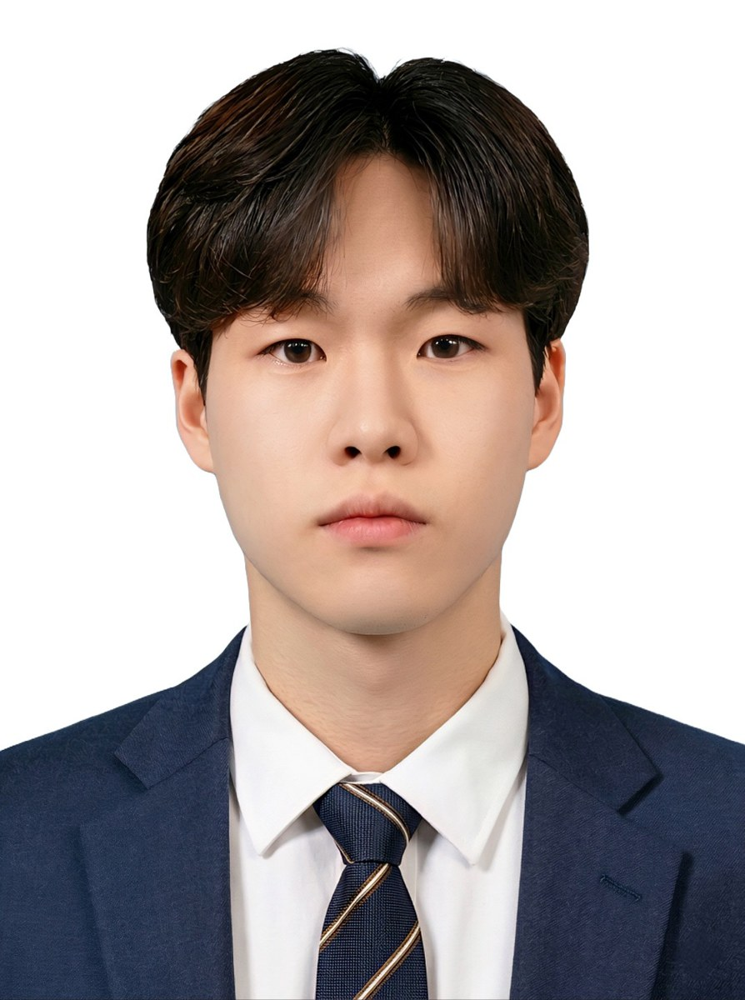

C, C++, C#, Python, TypeScript
PyTorch, Transformers, OpenCV, TensorRT, ONNX, TFLite, YOLO, VLM(Qwen · InternVL), Grounding DINO, scikit-learn, pandas, FFmpeg
카메라 캘리브레이션, 다중 카메라 3D, Blender, QGIS, ArcGIS
STM32 (ARM Cortex-M), Raspberry Pi, Jetson Orin Nano, Buildroot / Yocto, Linux Kernel · 디바이스 드라이버
ROS 2, Nav2, SLAM Toolbox
TCP/IP, MQTT, RTSP, WebRTC, CAN, I2C, UART, OpenSSL(TLS)
CANoe, CAPL, AUTOSAR, ISO 26262, A-SPICE, MATLAB / Simulink
FastAPI, Django REST, Vue 3, Next.js, Qt / PySide6, Docker, Jenkins, GitLab CI/CD, AWS EC2, Git, Linux